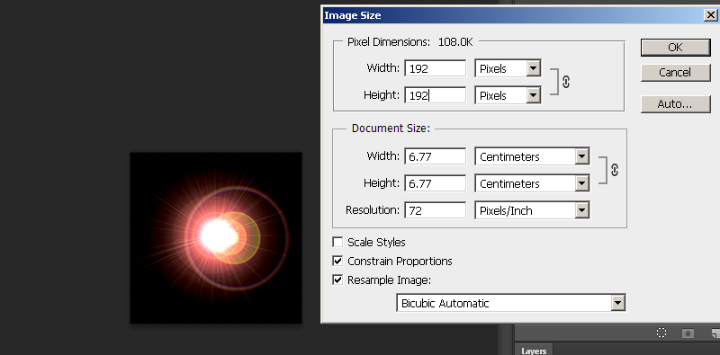
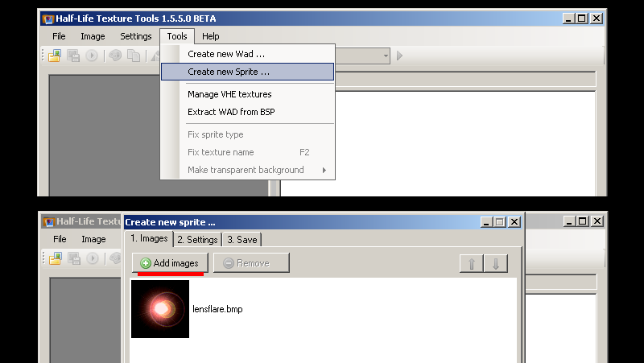
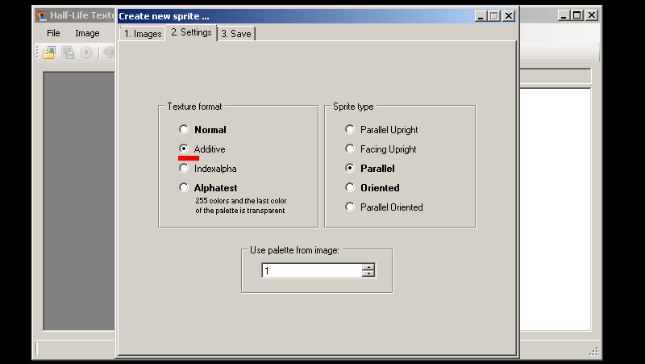
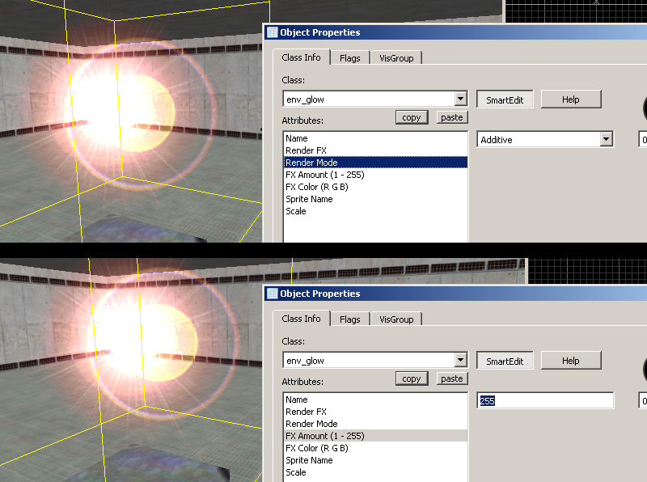
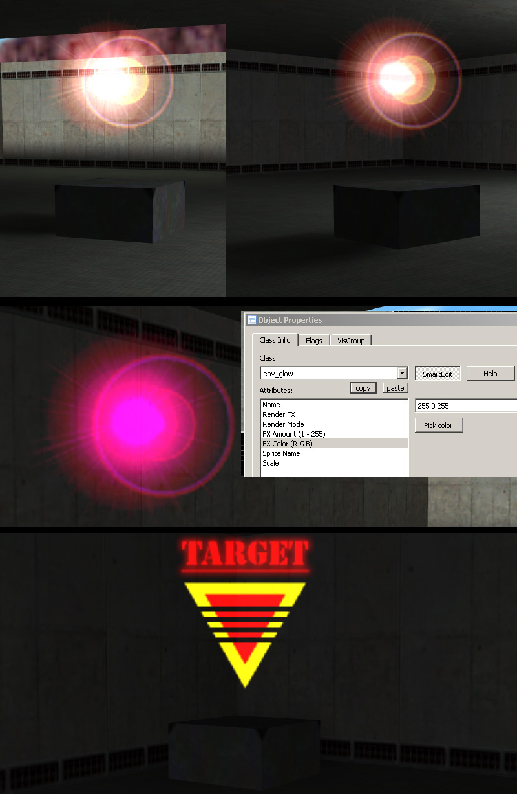
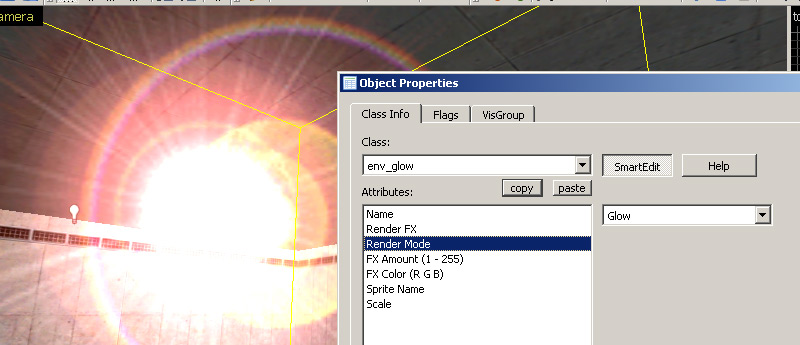
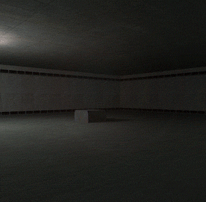

The standard and most common type of sprite you would use are additive transparency types. They are quite simple are generally used lights or effects.
1) Begin by creating a new document with a black fill (in additive, black is transparent and anything else appears as light). Paint or add a glow of some sort, or in this example ive rendered a lensflare. Scale the image to a GoldSrc friendly image size which is a divisible by 16 number. In this case I used 192X192.

2) When finished convert the image to indexed color just like in Step1, or if you don't wish to do dithering or controlled palettes just save it as BMP24 and let HL-Texture tools do the conversion.
Then open up half-life texture tools and go to Tools>Create new sprite... then click "add new images". Add your newly created BMP.

3)Go to the number 2 "Settings" tab and select "Additive" as your texture format. For sprite format leave as default "parallel".Click tab 3 and save the sprite in your sprite directory just as before in Part1, Step4

4) Open up hammer or J.A.C.K and create an env_glow. Choose your sprite file as before in part1 as well as scale, only this time we need to set "Additive" for our rendermode. Remember to check if "FX Amount" is 255 in order for our sprite to be visible in-game.

5)Compile the map and observe. As seen here the additive effect is better when used in a darkened area. You can also "tint" the sprites color by using "FX Color". Lastly here is another example that works well for an additive type sprite is a target marker.

6) Using "Glow" render mode acts just like "Additive" but also scales and fades away at distances. A decent choice for light coronas.

